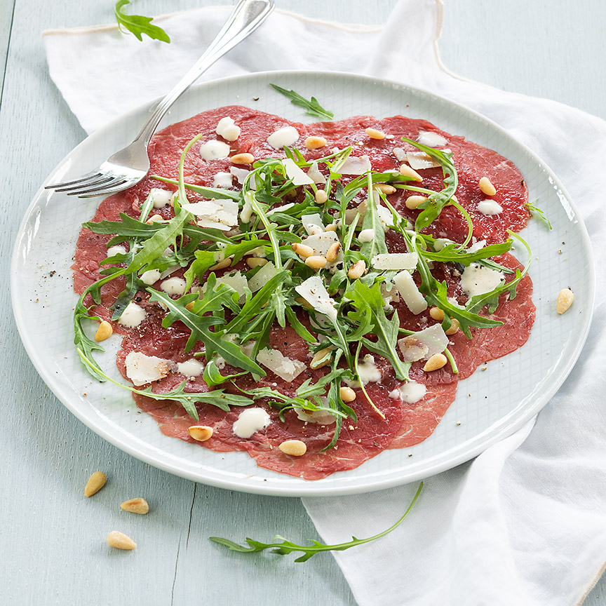

Carpaccio
Dit is het ideale om te eten voordat je aan je hoofdgerecht begint! Heerlijk!
Ingrediënten
- ½ el balsamicoazijn
- 3 el olijfolie truffelaroma
- 250 gram rundercarpaccio
- 30g rucola
- 50 gram Parmiggiano Reggiano
Bereidingswijze
- Meng de azijn, olie, peper en eventueel zout tot een dressing. Verdeel de plakjes carpaccio naast elkaar over borden en besprenkel met de dressing.
- Snijd de rucola grof en verdeel over de carpaccio. Schaaf de Parmezaanse kaas er met een dunschiller over. 
Combinatietip Lekker met geroosterde pijnboompitten.